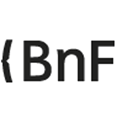

Bienvenue sur data.idref.fr, triple store d’IdRef et de ses alignements.
Les données
Dans le triple store d'IdRef, vous trouverez
les notices d’autorité IdRef et les publications et références bibliographiques liées à une autorité IdRef en provenance des catalogues et gisements documentaires suivants :
| Sudoc |
Calames |
| theses.fr |
 BnF |
| Scienceplus (EDP, OUP, etc.) |
Cairn.info |
| OpenEdition |
érudit |
| HAL |
Persée |
| Numdam |
zbMATH |
| ORBi (Université de Liège) |
ORBi_Mons (Université de Mons) |
| Archive ouverte Unige (Université de Genève) |
Libra (Université de Neuchâtel) |
| Folia (Université de Fribourg) |
IRIS (Université de Lausanne) |
| CanalU |
Horizon IRD |
L'ensemble des données d'autorité d'IdRef sont converties sous la forme de triplets RDF.
Tous les types d'autorité sont présents : Personnes, Collectivités, Noms Communs (Rameau et FMeSH), Noms géographiques, Familles et Titres et même les Notices de regroupement (préfiguration du modèle WOEMI).
Toutes les publications et références documentaires sont présentes sous la forme d’une URI, d’un rôle, d'une date de publication et d’une citation bibliographique ou d'un titre (voir selon les corpus) et des liens aux autorités sous la forme de concepts, de contribution, etc.
NB : Le Sudoc constitue un cas particulier car la modélisation de ses ressources documentaires est plus riche que pour les autres gisements. De plus, le Sudoc est le vecteur des alignements des ressources theses.fr et BnF avec IdRef.
Le temps réel et les mises à jour
La conception de
data.idref.fr repose sur un parti pris pour
le temps réel.
Chaque modification apportée aux notices d’autorité et chaque création d'autorité via les interfaces de production (WinIBW ou IdRef) est répercutée sans délai.
Afin d’optimiser la
gestion de la synchronisation des données, chaque notice d'autorité a un graphe bien à elle, appelé « graphe nommé » et numéroté par son identifiant PPN.
Il en va de même pour les ressources bibliographiques Sudoc et leurs liens aux autorités. Chaque notice Sudoc a son graphe dédié. Chaque modification ou création de notice Sudoc est répercutée sans délai dans data.id
ref.fr.
Pour les autres gisements documentaires, les alignements sont mis à jour à périodicité régulière, le plus souvent chaque semaine, en fonction des nouveaux dépôts effectués dans les gisements sources.
Exemple : l'alignement d'un auteur d'une nouvelle publication dans ORBi sera visible dans la semaine suivante.
La modélisation des autorités et des alignements aux publications
Pour naviguer et interroger les données, il faut avoir une idée de leur modélisation.
Une autorité est décomposée en notice et en entité :
- un uri <http://www.idref.fr/PPN> qui correspond à la notice
- un uri <http://www.idref.fr/PPN/id> qui correspond à l’entité décrite.
Ces deux éléments sont reliés par un lien de type 'foaf:primaryTopic' allant de la notice vers l’entité décrite :
- <http://www.idref.fr/PPN> <http://xmlns.com/foaf/0.1/primaryTopic> <http://www.idref.fr/PPN/id>
Les publications et références bibliographiques pointent vers les autorités.
Cela signifie que les triplets des liens bibliographiques ont pour « sujet » les uri des références documentaires et pour « objet » les uri d'entités IdRef.
Soit le roman « La plaisanterie » de Milan Kundera dans le Sudoc, le triplet correspondant est :
- <http://www.sudoc.fr/203172744/id> <http://id.loc.gov/vocabulary/relators/aut.html> <http://www.idref.fr/026955059/id>.
Soit des publications de "Meguerditchian, Adrien" dans HAL, OpenEdition et Archive ouverte UNIGE, les triplets correspondants sont :
- <https://hal.archives-ouvertes.fr/hal-01432469#id> <http://id.loc.gov/vocabulary/relators/aut> <http://www.idref.fr/146571541/id>.
- <https://archive-ouverte.unige.ch/unige:161221#id> <http://id.loc.gov/vocabulary/relators/aut> <http://www.idref.fr/146571541/id>.
- <http://journals.openedition.org/primatologie/1625#id> marcrel:aut <http://www.idref.fr/146571541/id>.
Il est ensuite possible d'obtenir plus de propriétés des publications (co-auteurs, titre, date de parution, ...) : pour cela, consultez la documentation.
Les interfaces
A partir de la barre d’action en haut à droite, 3 modalités d’exploration des données sont proposées, d’une technicité progressive :
1. Exploration est un encart de recherche en langage naturel et de navigation par rebond de lien en lien
2. Yasgui est un éditeur de requêtes sparql qui facilite leur rédaction, les mémorise, etc.
3. Sparql endpoint est l'éditeur sparql brut du triple store
Maintenant à vous de jouer !